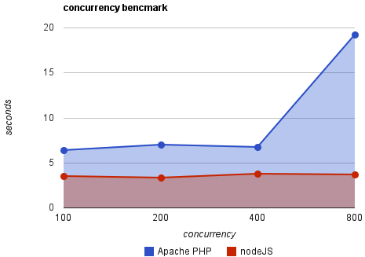
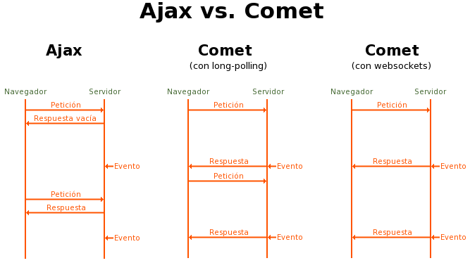

Introducción a Node.js
Publicado el¿Qué es Node.js?
Node.js (de ahora en adelante Node) es un entorno JavaScript de lado de servidor que utiliza un modelo asíncrono y dirigido por eventos.
Node usa el motor de JavaScript V8 de Google: una VM tremendamente rápida y de gran calidad escrita por gente como Lars Bak, uno de los mejores ingenieros del mundo especializados en VMs. No olvidemos que V8 es actualizado constantemente y es uno de los intérpretes más rápidos que puedan existir en la actualidad para cualquier lenguaje dinámico. Además las capacidades de Node para I/O (Entrada/Salida) son realmente ligeras y potentes, dando al desarrollador la posibilidad de utilizar a tope la I/O del sistema.
Node soporta protocolos TCP, DNS y HTTP.
¿Qué diferencias tiene respecto a Apache u otros servidores web?
Apache crea un nuevo hilo por cada conexión cliente-servidor. Esto funciona bien para pocas conexiones, pero crear nuevos hilos es algo costoso, así como los cambios de contexto. Como vemos en la siguiente gráfica, a partir de 400 conexiones simultáneas, el número de segundos para atender las peticiones crece considerablemente. Podemos decir que Apache funciona bien pero no es el mejor servidor para lograr máxima concurrencia (tener el número mayor de conexiones abiertas posibles).
Uno de los puntos fuertes de Node es su capacidad de mantener muchas conexiones abiertas y esperando. En Apache por ejemplo el parámetro MaxClients por defecto es 256. Este valor puede ser aumentado para servir contenido estático, sin embargo si se sirven aplicaciones web dinámicas en PHP u otro lenguaje es probable que al poner un valor alto el servidor se quede bloqueado ante muchas conexiones -esto dependerá del trabajo que la aplicación web de al servidor y de su capacidad hardware-.
Una aplicación para Node se programa sobre un solo hilo. Si en la aplicación existe una operación bloqueante (I/O por ejemplo), Node creará entonces otro hilo en segundo plano, pero no lo hará sistemáticamente por cada conexión como haría Apache. En teoría Node puede mantener tantas conexiones como número máximo de archivos descriptores (sockets) soportados por el sistema. En un sistema UNIX este límite puede rondar por las 65.000 conexiones, un número muy alto. Sin embargo en la realidad la cifra depende de muchos factores, como la cantidad de información que esté la aplicación distribuyendo a los clientes. Una aplicación con actividad normal podría mantener 20-25.000 clientes a la vez sin haber apenas retardo en las respuestas.
Un inconveniente de Node es que debido a su arquitectura de usar sólo un hilo también que sólo puede usar una CPU. Un método para usar múltiples núcleos sería iniciar múltiples instancias de Node en el servidor y poner un balanceador de carga delante de ellos.
¿Es el único en su especie?
¡No! Hay Otros proyectos como Tornado (Python), Twisted (Python), EventMachine (Ruby), Scale Stack (C++), Apache MINA (Java) o Jetty (Java).
El lenguaje de programación funcional Erlang también puede ser una buena alternativa. El único inconveniente es que la curva de aprendizaje es mayor respecto el uso de un lenguaje ya conocido sobre los proyectos mencionados arriba. Erlang ha sido diseñado para crear sistemas en tiempo real con alta escalabilidad y alta disponibilidad. Se usa entre otras cosas en telecomunicaciones, bancos, comercio electrónico o mensajería instantánea.
Que sí, ¡pero quiero ver código!
Para que os hagáis la idea de cómo es un programa escrito para Node, veamos el ejemplo típico (hello_world.js):
var http = require('http');
var s = http.createServer(function (req, res) {
res.writeHead(200, {'Content-Type': 'text/plain'});
res.end('Hello World\n');
});
s.listen(8000);
console.log('Server running!');
Ahora iniciamos la aplicación:
$ node hello_world.js
Server running!
Cuando iniciamos la aplicación, Node le dice al sistema que le avise (mediante epoll, kqueue, etc.) cuando un cliente se conecte. Mientras tanto se pondrá a dormir (sleep). Si alguien se conecta, se ejecuta el callback anónimo definido en createServer. Por cada conexión se realiza una pequeña reserva de memoria en un heap.
Si abrimos http://localhost:8000/ en el navegador entonces obtenemos "Hello World".
"Nunca esperes, nunca duermas, funciona siempre"
Desde que empezamos a programar nos enseñaron a hacerlo de forma secuencial. Es decir:
doSomething1();
doSomething2();
doSomething3();
Hasta que no termina 1 no empieza 2, y así sucesivamente con la siguiente instrucción. Veamos otro ejemplo:
var result = db.query("select..");
useResult(result);
otherTask();
Aquí no se ejecutará useResult hasta que no termine la consulta, es decir, que la primera línea bloquea el resto del proceso. De igual modo hasta que no termine useResult no podrá ejecutar otherTask. Ahora veamos el siguiente código:
db.query("select..", function (result) {
useResult(result);
});
otherTask();
Aquí la consulta no bloqueará el proceso entero, sino que se creará un hilo de fondo para db.query y cuando termine se ejecutará su callback asociado.
Así es en realidad como se tendría que hacer las operaciones de I/O, sin embargo no se hace así porque es mucho más difícil y porque muchos lenguajes no facilitan este tipo de programación -no tienen closures o funciones anónimas por ejemplo-. Para la mayoría de los programadores el uso de hilos, candados (locks) y memoria compartida se convierte en una gran pesadilla. A esto podemos añadirle que muchas librerías actuales tampoco soportan peticiones asíncronas (como libmysql-client). Estos son los factores por los que tradicionalmente se ha enseñado a estructurar secuencialmente los programas.
JavaScript es muy buen lenguaje para programar asíncronamente, ya que fue diseñado especialmente para ser usado en programación orientada a eventos. Esto le hace especialmente atractivo para realizar aplicaciones no bloqueantes y de alta concurrencia.
Otro ejemplo:
var fs = require('fs');
fs.readFile('report.txt', function(data) {
console.log('Read: ' + data);
});
fs.writeFile('message.txt', 'Hello World!', function() {
console.log('File saved!');
});
A Node se le dará la función de leer y escribir en los ficheros y a continuación pasará a dormir (sleep). Cuando las operaciones se terminen se ejecutarán los callbacks asociados a cada tarea. Como explicamos anteriormente, no hay nada que garantice el orden en el que van a ser mostrados los mensajes de los callbacks. Esta manera de ejecutar la I/O asegura que el hilo principal de programa siempre va a estar en continuo movimiento llamando nuevas tareas para realizar en segundo plano.
¿Cuándo usarlo?
Node es especialmente bueno en aplicaciones web que necesiten una conexión persistente con el navegador del cliente. Mediante una serie de técnicas llamadas Comet, puedes hacer una aplicación que envíe datos al usuario en tiempo real; es decir, que el navegador mantenga la conexión siempre abierta y reciba continuamente nuevos datos cuando los haya. Para servidores y aplicaciones clásicas que no estén preparadas para mantener muchas conexiones, la forma más sencilla es solicitar desde el navegador un cada X segundos nueva información (polling). Si tenemos muchos usuarios a la vez abriendo conexiones y haciendo peticiones a la BD nos encontramos con que nuestro servidor no da más de sí y deja de atender peticiones -acaba petando, vamos-. Un ejemplo de polling clásico es la fisgona de Menéame que realiza peticiones mediante AJAX a un script PHP que devuelve nuevos datos en JSON cada 3 segundos y actualiza la tabla de novedades.
Una lista de aplicaciones para las que Node encajaría perfectamente:
- Juegos online.
- Gestores de correo online: de esta manera teniendo el navegador abierto podríamos ver notificaciones en tiempo real de nuevos correos recibidos.
- Herramientas de colaboración.
- Chats.
- Redes sociales: por ejemplo para actualizar automáticamente tu muro de novedades.
- Herramientas de traducción en tiempo real.
¿Cuándo no usarlo?
Node tiene muchas ventajas, pero como en todo no hay herramientas ni peores ni mejores, sino unas que se ajustan mejor a unos casos de uso que otras.
- ¿Son importantes tiempos de respuesta bajos y alta concurrencia?
- ¿El número de usuarios activos va a ser considerable?
- ¿El proyecto es pequeño? Si es grande, ¿se disponen de las librerías/drivers de DB necesarias para trabajar desde JavaScript?
Si en dichas preguntas has respondido sí, entonces Node se adapta perfectamente como solución a tus problemas. Si has respondido no a alguna pregunta entonces posiblemente Node no sea la mejor solución para ese software.
Librerías interesantes
- Socket.IO: "Socket.IO aims to make realtime apps possible in every browser and mobile device, blurring the differences between the different transport mechanisms. Under the hoods, Socket.IO will use feature detection to decide if the connection will be established with WebSocket, AJAX long polling, etc (see supported transports), making creating realtime apps that work everywhere a snap."
- Express: un framework web sobre Node. Manual Daniweb, getting started.
- node.dbslayer.js: "it's a very basic and easy-to-use library to connect to a DBSlayer server, which effectively provides non-blocking and scalable MySQL support for Node."
- Handlebars.js: "provides the power necessary to let you build semantic templates effectively with no frustration." Buen manual de Think Vitamin.
- MongoDB driver o Mongoose.
Referencias
- http://nodejs.org/
- http://debuggable.com/posts/understanding-node-js:4bd98440-45e4-4a9a-8ef7-0f7ecbdd56cb
- http://www.slideshare.net/amix3k/comet-with-nodejs-and-v8
- http://nodejs.org/jsconf.pdf
- http://code.google.com/p/node-js-vs-apache-php-benchmark/wiki/Tests
- http://www.quora.com/Whats-the-difference-between-an-event-loop-and-a-per-request-model
- http://www.stoimen.com/blog/2010/11/16/diving-into-node-js-introduction-and-installation/
- http://www.stoimen.com/blog/2010/12/02/diving-into-node-js-a-long-polling-example/
- http://stackoverflow.com/questions/3011317/node-js-or-erlang
- http://www.erlang.org/
- http://stackoverflow.com/questions/3878096/nodejs-nodejs-org-experience-comments
- http://www.olympum.com/future/nodes-and-jetties/
- http://stackoverflow.com/questions/5062614/how-to-decide-when-to-use-nodejs
Recursos adicionales
- http://www.youtube.com/watch?v=F6k8lTrAE2g
- http://britg.com/2009/07/01/server-side-javascript-continued-node-js-plus-example/
- http://howtonode.org/express-mongodb
- http://dailyjs.com/2010/11/01/node-tutorial/
- http://www.kegel.com/c10k.html
- http://howtonode.org/websockets-socketio
- http://net.tutsplus.com/tutorials/javascript-ajax/start-using-html5-websockets-today/